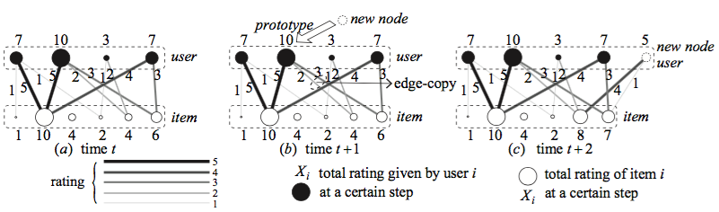
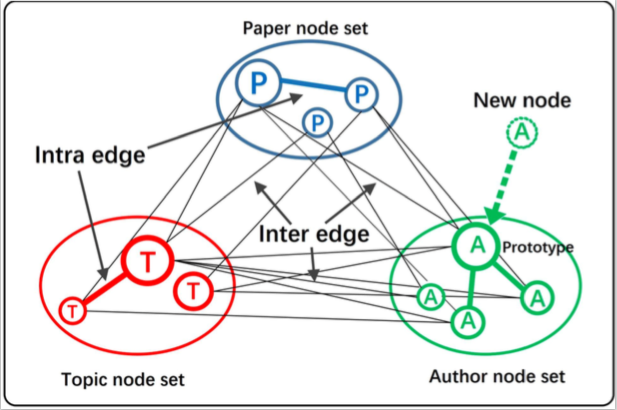
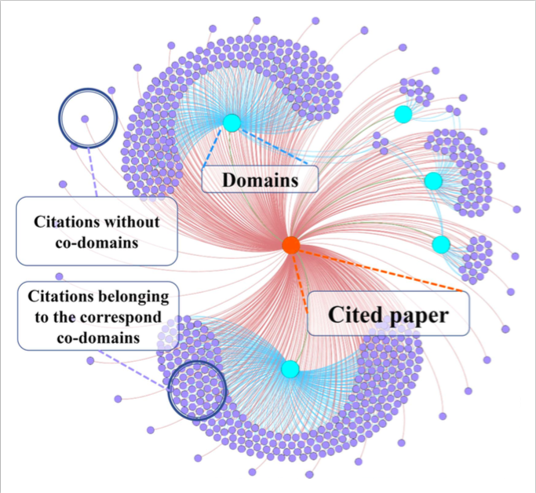
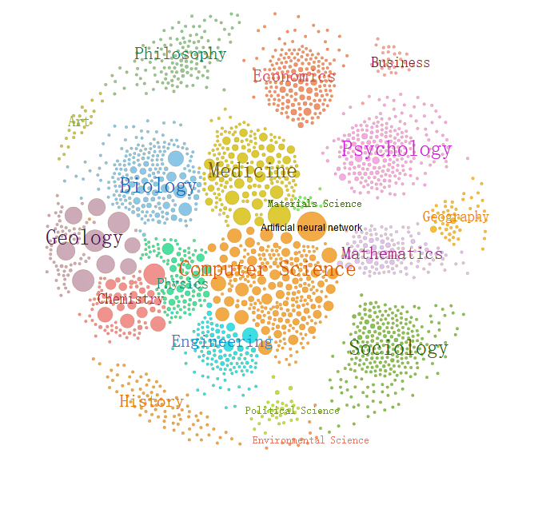
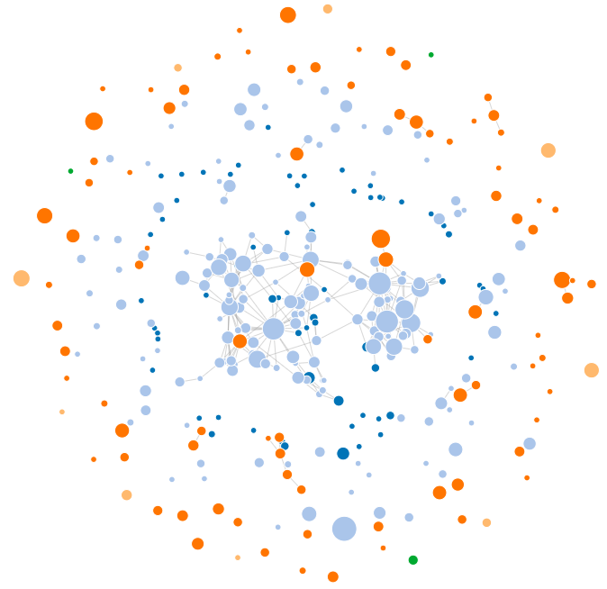
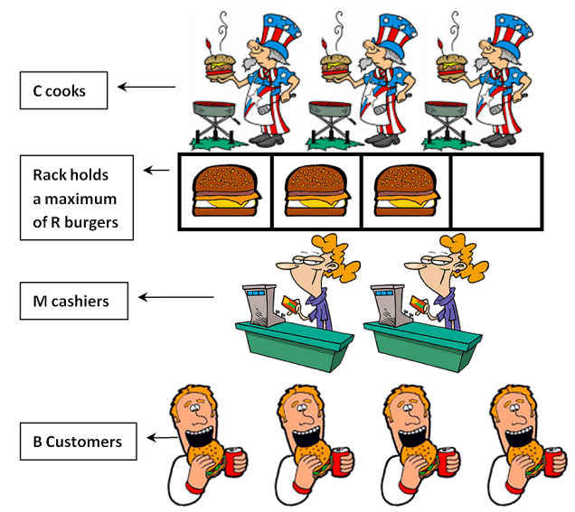
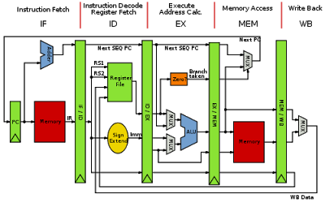

|
Find Me
| Email |
klk316980786[at]sjtu.edu.cn
|
| Address |
SEIEE Buildings 1-441,
800 Dongchuan Road,
Shanghai, 200240 China.
|
|
|
Education
Shanghai Jiao Tong University, China, from Sep. 2014 to Jun. 2018
B.Sc., Department of Computer Science & Zhiyuan College
Cornell University, USA, from Jun. 2017 to Aug. 2017
Visiting Student, Computer Science Department
|
|
Research
I am adept at coding and keen on building fantastic software system. My current research interest focuses on:
- Distributed System
- Security
- Theoretical Networking or Big-scale Network Analysis
|
|
A Simulator for Market Analysis Under Bancor Protocol
Kenny Kong, Emin Gun Sirer, Jul. 2017
This work is advised by Prof. Emin Gun Sirer.
Bancor holds the record for the biggest crowd-funding, ever, in the history of mankind. However, the robustness and efficiency of Bancor remain to be explored. Bancor also has several flaws due to its design principle.
Therefore, we build a simulator which monitors market performance under Bancor protocol and assists in showing whether Bancor protocol is efficient and safe enough for a market with massive customers who launch huge amount of transaction orders simultaneously.
After conducting experiments in multiple circumstances and data analyzing as well, results show that Bancor protocol is flawed in three aspects:
- The existence of problem about "Double Coincidence of Wants" Bancor wants to solve is unsubstantiated in real world. Even assuming this problem does exist, Bancor protocol cannot ensure its superiority to classic market.
- The price of smart token, i.e. currency in Bancor protocol could fluctuate significantly, since Bancor neglects potential human behavior.
- Bancor protocol is faced with severe cancellation of concurrent transactions under limited order.
|
|  |
Evolving Bipartite Model Reveals the Bounded Weights in Social Networks: A Case Study in Recommendation Networks
Lingkun Kong, Xudong Wu, Hongru Zhu, Luoyi Fu, Xinbing Wang, Guihai Chen, Nov. 2017
This work is advised by Prof. Luoyi Fu and Xinbing Wang.
Many realistic social networks can be presented by evolving bipartite graphs, in which dynamically added elements are divided into two entities and connected by links through these two entities, such as followees and followers in Twitter networks, authors and scientific topics in scholarly networks, users and items in recommendation networks, and etc. However, when adding weights of edges, i.e., connections between elements, how to mathematically model such evolving social networks, along with quantitative characterizations, remains unexplored.
Motivated by this, we develop a novel evolving bipartite model (EBM), which, based on empirically validated power-law distribution within multiple realistic social networks, discloses that the distribution of total weights given or received by each element in networks is determined by the weighting scale and bounded by certain ceilings and floors.
Here, we summarize contributions of EBM by three aspects:
- Weights Incorporated: EBM originally incorporates the weights of edges in bipartite graphs into the model construction of social networks.
- Mathematical Justified: EBM offers detailed mathematical proof to consolidate the reasonability of itself.
- Experiment Validated: EBM's third contribution relies on extensive experimental validations in the context of recommending networks.
|
|  |
MSM: A Multi-entity Scholarly Model for Systematic Understanding of Evolving Scholarly Networks
Lingkun Kong, Fengyu Deng, Jiaqi Liu, Jinghao Zhao, Luoyi Fu, Xinbing Wang, Oct. 2017
This work is advised both by Prof. Luoyi Fu and Xinbing Wang.
Scholarly networks contain massive scholarly information that can be mainly categorized into three entities, i.e., paper, author and topic, which exhibit a co-evolution over time.
Though scholarly networks have attracted much attention over the past years, most works focus on single dimension of the network, e.g. citation, collaboration or topic network; while few of them incorporate different kinds of entities into an entirety to generate a systematic understanding of scholarly networks at scale. We bridge this gap by proposing a multi-entity scholarly model (MSM) with succinct theoretical foundation, which amalgamates entities of paper, author and topic into one single framework to simulate interactions among different entities, and thus presenting the co-evolution within scholarly networks.
- We originally explore comprehensive properties in scholarly networks with the concern of mutiple entities, i.e., paper, author and topic. Based on scholarly datasets Microsoft Academic Graph, which contain about 126 million papers, we use data-mining and other big-data analyzing approaches to observe patterns in the growth of the scholarly network.
- Given empirical observations, we first time establish a comprehensive modeling of evolving scholarly networks. Combining entities of paper, author and topic in singe fabric, the proposed model captures both the inter-correlation and intra-correlation of the three entities during the evolving process.
- Based on the constructing methods of random arrival, preferential attachment, edge copying and the assumption of the affiliation relationship inside entities, we provide strong theoretical guarantees.
|
|  |
Wandering Between Close and Apart: Are Scholarly Domains Crossable?
Lingkun Kong, Bo Wang, Jiaqi Liu, Luoyi Fu, Xinbing Wang, Jun. 2017
This work is advised both by Prof. Luoyi Fu and Xinbing Wang.
Interdisciplinary (scholarly cross-domain) collaborations have generated huge impact to society, and have been previously proved to exhibit domain skewness.
This viewpoint, however, is limited by the paucity of experimental verification as well as the support of evaluation methods. Given this limitation, we address a question to determine the possible existence of scholarly cross-domain collaborations, namely: "Are scholarly domains crossable?"
In this work, we take the initiative to formalize a "crossability" quantification problem, where the "crossability" serves as an index that aims to evaluate the ability of two scientific domains to establish collaborations. Based on algorithm modeling and machine learning methods, we analyze diverse "crossabilities" which exist between different scientific domains.
|
|  |
Acemap: Academic Map System
Lingkun Kong, advised by Prof. Xinbing Wang, Jun. 2015 - now
I joined the Acemap group in my sophoremore year. Now I am a team leader in Acemap. By undertaking research projects in Acemap, I learn how to build a complete search engine as well as a comprehensive big data system. My major work in this group focuses on:
- Develop visualizing applications for scholarly information networks and presentation approaches.
- Implement the recommending algorithm for papers in Acemap, and present the result on website.
- Build and maintain the server and the back-end for Acemap.
|
|  |
Paper-forest Map: Graphic Tracker for Scholar's Publications
Lingkun Kong, advised by Prof. Xinbing Wang, Sept. 2017
Paper-forest Map is one of the visualization applications in Acemap, which aims to provide users with direct access of connections between one scholar's publications. Therefore, if users want to track series in one certain researcher's publications, they can refer to this map and quickly obtain cliqued publications written by this researcher. They can also glean the sketch about the relationship between this researcher's publications. Details about this map are listed below:
- Nodes in the graph represent one scholar's publications, whose sizes indicates their citations' numbers -- larger size means bigger number of citations.
- The link between nodes in the graph represents the reference of scholar's one publication to his/her another publication.
- The color of node indicates the publishing year of scholar's publications.
- Singletons, i.e., nodes with no connections with others, indicate separate works of this author.
|
|  |
Linux Kernel Applications Development
Lingkun Kong, in CS356, advised by Prof. Fan Wu, Spring. 2016
This project aims to get understanding of how operating system works by developing Linux Kernel applications. Adittionally, I developed Android testing applications for this project.
|
|  |
CPU Design on MIPS Architecture in Verilog
Lingkun Kong, in CS334, advised by Li Wang, Spring 2016
This project aims to build a simple pipelining CPU by Verilog coding under MIPS architecture. After this project, I became the TA of this course.
|
|
Scholarships
National Scholarship, Ministry of Education of China, 2015 and 2017
Highest honor for undergraduates in China, awarded to top 0.2% students.
Scholarship of Outstanding Undergraduates, Shanghai Jiao Tong University, 2017
Awarded to < top 1% undergraduates in Shanghai Jiao Tong University, founded for encouraging scientific research.
Zhiyuan Honorary Scholarship, Shanghai Jiao Tong University, 2015, 2016 and 2017
|
|
Awards
Junzheng Scholar, Shanghai Jiao Tong University, 2017
Awarded to top 30 undergraduate scholars in Shanghai Jiao Tong University.
Merit Student of Shanghai Jiao Tong University, Shanghai Jiao Tong University, 2015
In Chinese, the "Merit Student" is also called "San Hao Student", which is awarded to top10 students for their comprehensive performance.
First Prize in RoboMasters Competition (East China), Ministry of Education of China, Jun. 2015
Second Prize in RoboMasters Competition (China), Ministry of Education of China, Jul. 2015
RoboMasters is an annual robotics competition for teams of aspiring engineers to design and build next-generation robots for completing difficult tasks and hand-to-hand combat.
|
|
More About Me
I am a table tennis master-level athlete in Shanghai Jiao Tong University. In Nov. 2014, I represented our school and won first runner-up of national college students' table tennis competition in our schools history. In Oct. 2016, I helped our school to win her first championship in Shanghai.
Besides, I am a crazy NBA basketball fan. Playing basketball is also one of my hobbies. Actually, I am a member in my class basketball team. I helped our team to win three successive championships in 2015, 2016 and 2017.
|
|
What's New!
The paper "FINE: A Framework for Distributed Learning on Incomplete Observations for Heterogeneous Crowdsensing Networks", authored by Luoyi fu, Songjun Ma, Lingkun Kong, Shiyu Liang and Xinbing Wang is accepted by the IEEE/ACM Transactions on Networking. (2018-03-01)
Our group have just updated Acemap website and developed many fancy tools.
I have submitted a paper to IEEE/ACM Transactions on Networking.
I have just finished my work of EBM and submitted this work to MobiHoc2018.
|
|